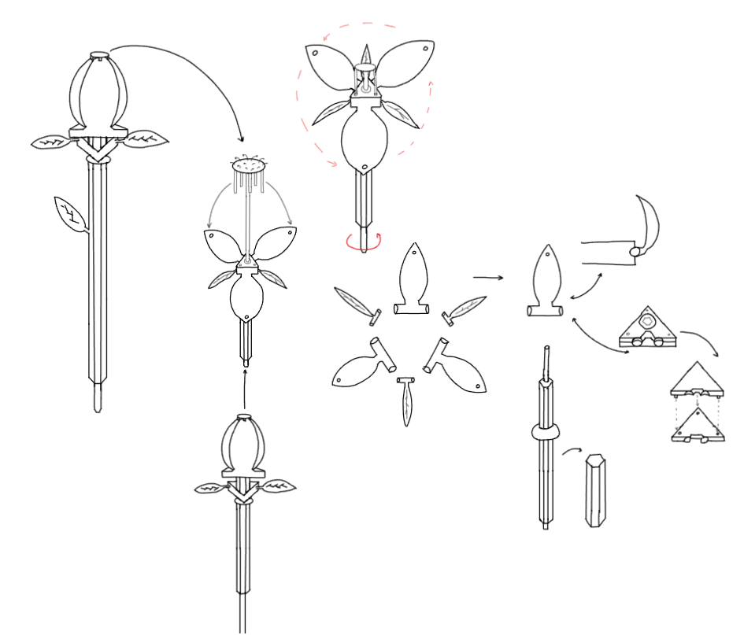

MECHANICAL FLOWER
Mechanical flower project that was created with a team as a part of the univeristy course.
Project Overview
The Mechanical Flower project was developed as a collaborative team effort during a university engineering course. This project challenged us to design and fabricate a kinetic sculpture that mimics the natural movements of a blooming flower through mechanical engineering principles.
Our team focused on creating an aesthetically pleasing yet mechanically sound design that demonstrates fundamental engineering concepts including gear systems, motor control, and structural mechanics. The flower features petals that open and close in a smooth, lifelike motion, controlled by a carefully designed mechanical system.
Design Process
The project evolved through multiple stages, from initial concept sketches to detailed 3D modeling, culminating in the physical fabrication and assembly of the final prototype. Each stage required careful consideration of both form and function, balancing aesthetic appeal with mechanical feasibility.
Personal Impact
Contributed to the sketch design and 3D modeling of the final product, and assisted with assembly. Modeled and scaled the leaves of the flower. Designed the parametric geometry of the petals in SolidWorks, employing the Freeform tool to achieve organic curvature while ensuring compatibility with the puzzle's rotating mechanism. Throughout the project, I strengthened my abilities in design, concept sketching, collaboration, and troubleshooting mechanical issues.
Conceptual Sketches

Initial design concept
3D Modeling & CAD Design

3D CAD model - mechanism detail
Final Result

Final assembled prototype

Flower mechanism in motion